你问「这里为什么不是点击整行展开」。原因是 10-07 那张图（providers-account-fold）照机器卡片标题的做法，只把「图标 + 名字 + 版本行」做成展开按钮：这一行里还有「Add account」按钮，按钮里不能再套按钮。但这条只限制按钮元素有多大，不限制能点的范围。结果是收起时只有左边一块能点，状态、额度、空白处点了都没反应；展开后同一个按钮却几乎占满整行。所以恰恰是收起、最想点开的时候最难点中。下面是真实页面（vite + 模拟数据，2026-10-08 14:35）：「现在」取自 main def134095，「改后」是同一份代码加上这次的改动跑出来的，色块和标签是画在页面上的。
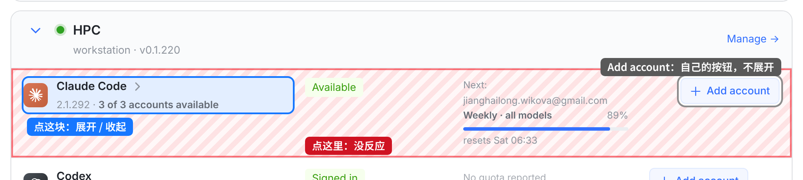
一整行里大约只有三分之一能点；点「Available」、点额度、点中间空白都没反应。
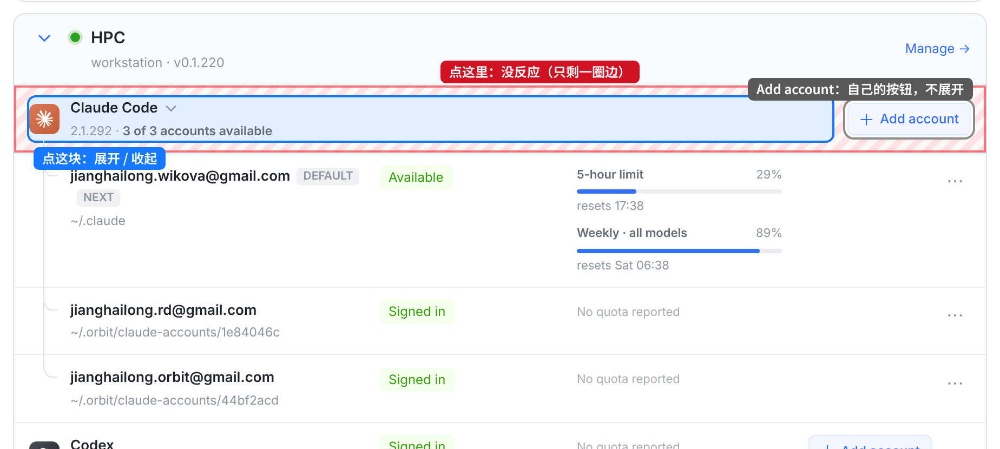
展开后引擎这一行只剩名字和 Add account 两列，按钮撑满第一列，只剩一圈边点了没反应。同一行，收起和展开时能点的范围差这么多。
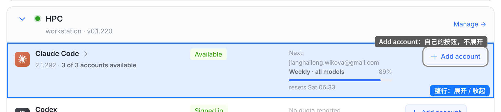
点图标、名字、状态、额度、空白处都会展开。Add account 还是它自己：点它照旧打开添加账号的面板（收起时顺带展开），展开时点它也不会把这一组收起来。
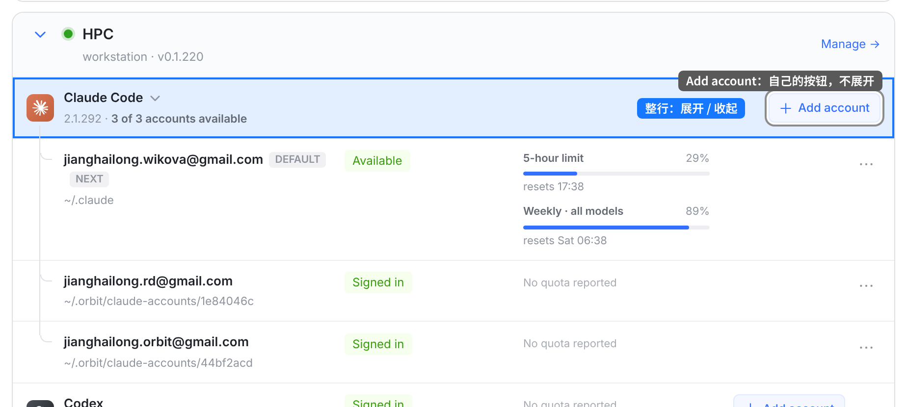
展开时同样整行可点，再点一下就收起。下面的账号行不受影响：点账号行还是账号行自己的事（改名、⋯ 菜单），不会把这一组收起来。
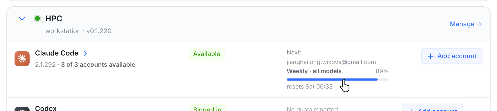
鼠标停在这一行任何地方（图里停在额度条上），光标都是手型，名字后的 › 变蓝。这就是今天鼠标停在名字那块时的样子，只是现在整行都这样。不加底色，和机器卡片标题的悬停一样。
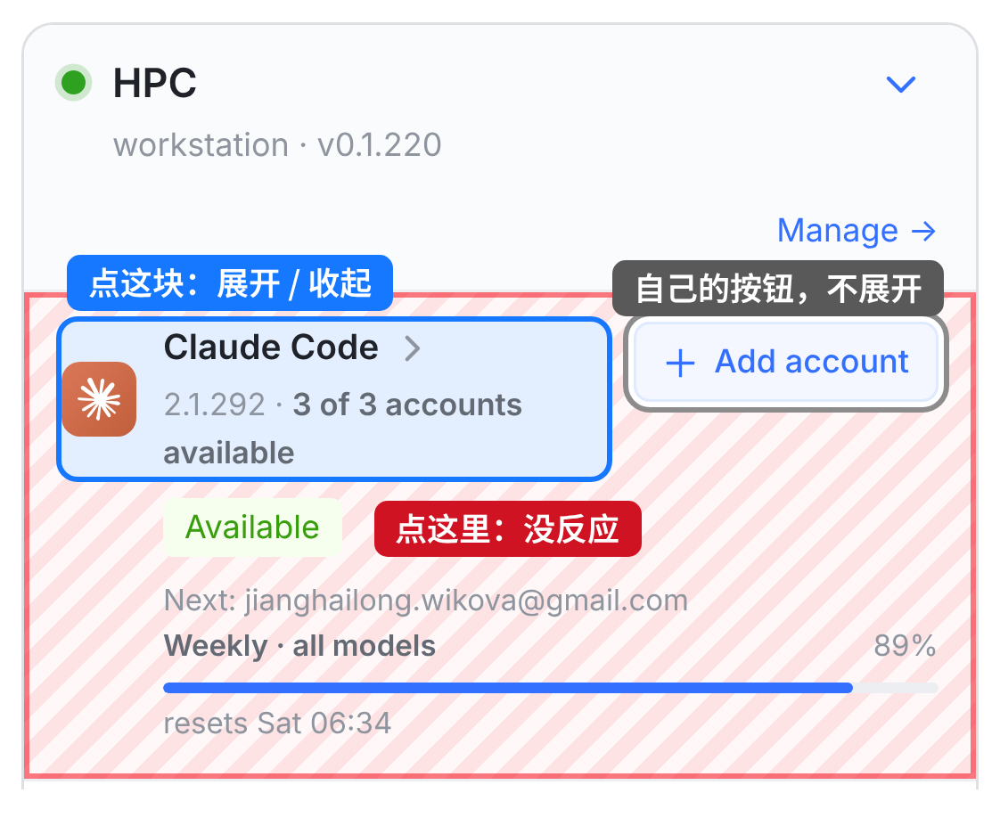
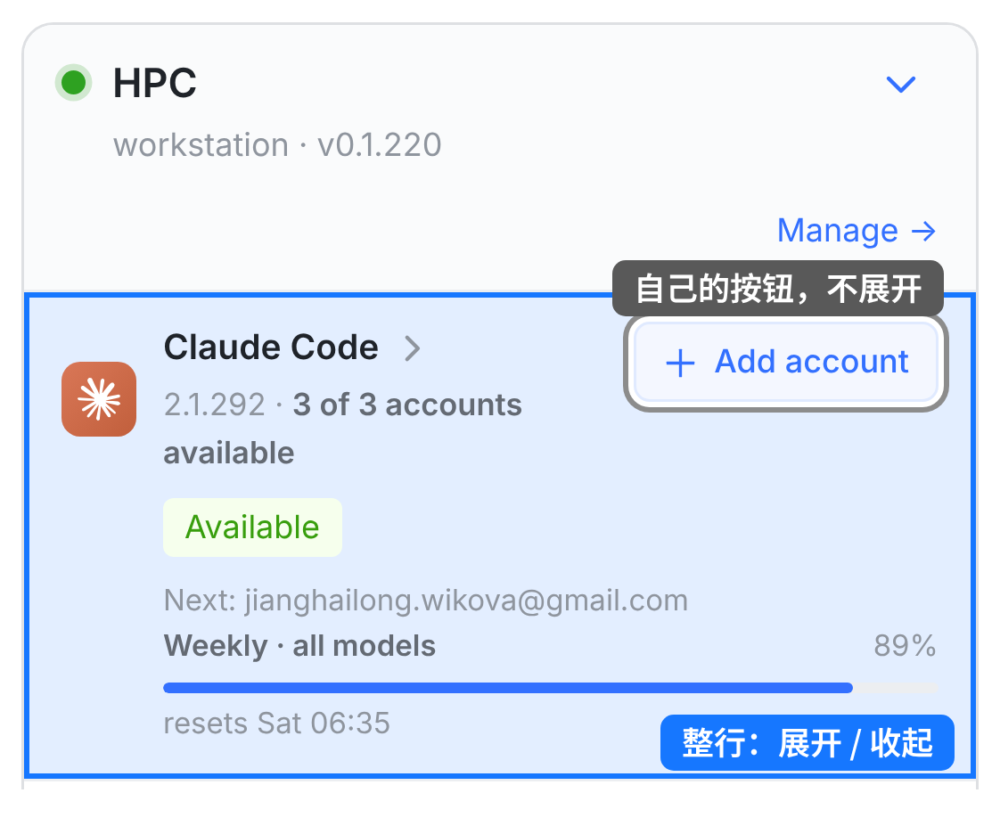
手机上这一行分三行（名字和 Add account、状态、额度），现在只有左上角那一块能点。改后整块都能点，布局一点不变。
| 点哪里 | 现在 | 改后 |
|---|---|---|
| 图标、名字、版本行、› | 展开 / 收起 | 不变 |
| 状态（Available）、额度（Next: …）、空白处 | 没反应 | 展开 / 收起 |
| Add account | 打开添加账号面板；收起时顺带展开 | 不变，也不会把展开的这组收起 |
| 拖选文字（比如复制 Next 的邮箱） | 只是选中 | 不变：拖选完松手不会展开 / 收起 |
| 这一行下面打开的面板、提示（添加账号、安装、更新失败） | 没反应 | 不变：面板里的字、输入框都不触发 |
| 下面的账号行 | 账号行自己的事 | 不变 |
| 键盘、读屏 | Tab 到名字那块，Enter / Space；读「Claude Code, collapsed / expanded」 | 不变 |
| 悬停 | 只有名字那块：手型、› 变蓝 | 整行：手型、› 变蓝 |
| 只有一个账号的行（Codex、Kimi…） | 不能展开 | 不变 |
这些都在改后那份页面上实际点过：状态、额度、中间空隙、名字各点一次都正好切换一次；Enter、Space 各切换一次（没有重复触发）；Add account、面板里的字和输入框、拖选邮箱、账号行，都不会触发展开 / 收起。
src/web/src/lib/foldHead.ts（新）：foldFromAnywhere，三种折叠标题共用的一条规则：点标题上任何地方等于点那个按钮。按钮本身不动（键盘、读屏照旧）。标题里自己的按钮、链接、输入框，弹到页面上的对话框，拖选文字松手，都不触发。src/web/src/components/RunnerEngines.tsx：多账号那一行（EngineRow，另外排除下面打开的面板和提示）、机器卡片标题（RunnerEngineCard）接上这条规则。src/web/src/components/AccountPools.tsx：账号池卡片标题（PoolCard）接上这条规则。src/web/src/index.css：三种标题整块 cursor: pointer（面板除外）；机器卡片、多账号那一行整块悬停时箭头变蓝（悬停在 Manage →、Add account 上时不变蓝）。lib/foldHead.test.ts（规则本身）；RunnerEngines.accountFold.test.tsx（多账号那一行、机器卡片标题）；ProvidersPage.pools.test.tsx（账号池卡片标题）。三个新用例在 main 上是红的，改后是绿的。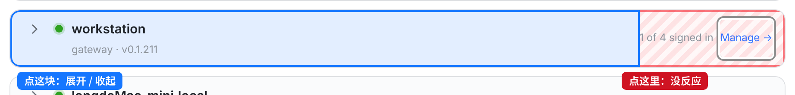
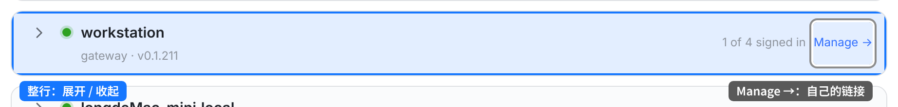
机器卡片标题：原来只有右边的摘要（「1 of 4 signed in」）点了没反应，现在整块都能点。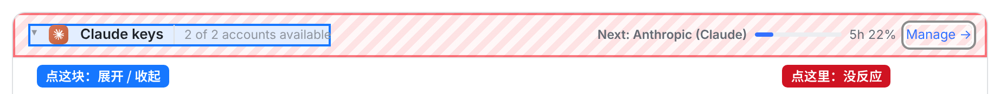
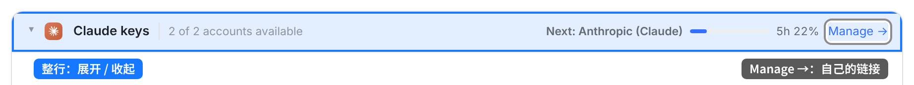
账号池卡片标题：原来只有左边一块能点，现在中间空白和「Next: … 额度条」也能点。悬停只变手型，箭头不变色（原来就没有悬停变色，这次不加）。